공조냉동기계기사(구) (2017-03-05 기출문제)
1과목: 기계열역학
1. 다음에 열거한 시스템의 상태량 중 종량적 상태량인 것은?
- 엔탈피
- 온도
- 압력
- 비체적
(정답률: 73%)

2. 300L 체적의 진공인 탱크가 25℃, 6MPa의 공기를 공급하는 관에 연결된다. 밸브를 열어 탱크 안의 공기 압력이 5MPa이 될 때까지 공기를 채우고 밸브를 닫았다. 이 과정이 단열이고 운동에너지와 위치에너지의 변화는 무시해도 좋을 경우에 탱크 안의 공기의 온도는 약 몇 ℃가 되는가? (단, 공기의 비열비는 1.4이다.)
- 1.5℃
- 25℃
- 84.4℃
- 144.3℃
(정답률: 36%)
3. 10℃에서 160℃까지 공기의 평균 정적비열은 0.7315kJ/(kgㆍK)이다. 이 온도 변화에서 공기 1kg의 내부에너지 변화는 약 몇 kJ인가?
- 101.1kJ
- 109.7kJ
- 120.6kJ
- 131.7kJ
(정답률: 73%)
4. 오토 사이클로 작동되는 기관에서 실린더의 간극 체적이 행정 체적의 15%라고 하면 이론 열효율은 약 얼마인가? (안, 비열비 k=1.4이다.)
- 45.2%
- 50.6%
- 55.7%
- 61.4%
(정답률: 62%)
5. 열역학 제1법칙에 관한 설명으로 거리가 먼 것은?
- 열역학적계에 대한 에너지 보존법칙을 나타낸다.
- 외부에 어떠한 영향을 남기지 않고 계가 열원으로부터 받은 열을 모두 일로 바꾸는 것은 불가능하다.
- 열은 에너지의 한 형태로서 일을 열로 변환하거나 열을 일로 변환하는 것이 가능하다.
- 열을 일로 변환하거나 일을 열로 변환할 때, 에너지의 총량은 변하지 않고 일정하다.
(정답률: 68%)
6. 분자량이 M이고 질량이 2V 인 이상기체 A가 압력 p , 온도 T(절대온도)일 때 부피가 V 이다. 동일한 질량의 다른 이상기체 B가 압력 2p, 온도 2T(절대온도)일 때 부피가 2V이면 이 기체의 분자량은 얼마인가?
- 0.5M
- M
- 2M
- 4M
(정답률: 61%)
7. 온도 300K, 압력 100kPa 상태의 공기 0.2kg이 완전히 단열된 강체 용기 안에 있다. 패들(paddle)에 의하여 외부로부터 공기에 5kJ의 일이 행해질 때 최종 온도는 약 몇 kJ인가? (단, 공기의 정압비열과 정적비열은 각각 1.0035kJ/(kgㆍK), 0.7165kJ/(kgㆍK)이다.)
- 315
- 275
- 335
- 255
(정답률: 53%)
8. 단열된 가스터빈의 입구 측에서 가스가 압력 2MPa, 온도 1200K로 유입되어 출구 측에서 압력 100kPa, 온도 600K로 유출된다. 5MW의 출력을 얻기 위한 가스의 질량 유량은 약 몇 kg/s인가? (단, 터빈의 효율은 100%이고, 가스의 정압비열은 1.12kJ/(kgㆍK)이다.)
- 6.44
- 7.44
- 8.44
- 9.44
(정답률: 59%)
9. 다음 냉동 사이클에서 열역학 제1법칙과 제2법칙을 모두 만족하는 Q1, Q2, W는?
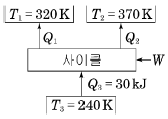
- Q1 = 20kJ, Q2 = 20kJ, W = 20kJ
- Q1 = 20kJ, Q2 = 30kJ, W = 20kJ
- Q1 = 20kJ, Q2 = 20kJ, W = 10kJ
- Q1 = 20kJ, Q2 = 10kJ, W = 5kJ
(정답률: 66%)
10. 4kg의 공기가 들어 있는 체적 0.4m3의 용기(A)와 체적이 0.2m3인 진공의 용기(B)를 밸브로 연결하였다. 두 용기의 온도가 같을 때 밸브를 열어 용기 A와 B의 압력이 평형에 도달했을 경우, 이 계의 엔트로피 증가량은 약 몇 J/K인가? (단, 공기의 기체상수는 0.287kJ/(kgㆍK)이다.)
- 712.8
- 595.7
- 465.5
- 348.2
(정답률: 58%)
11. 증기 터빈의 입구 조건은 3MPa, 350℃이고 출구의 압력은 30kPa이다. 이때 정상 등엔트로피 과정으로 가정할 경우, 유체의 단위 질량당 터빈에서 발생되는 출력은 약 몇 kJ/kg인가? (단, 표에서 h는 단위질량당 엔탈피, s는 단위질량당 엔트로피이다.)
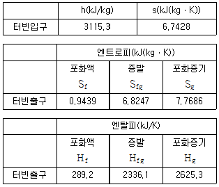
- 679.2
- 490.3
- 841.1
- 970.4
(정답률: 46%)
12. 피스톤-실린더 시스템에 100kPa의 압력을 갖는 1kg의 공기가 들어있다. 초기 체적은 0.5m3이고, 이 시스템에 온도가 일정한 상태에서 열을 가하여 부피가 1.0m3이 되었다. 이 과정 중 전달된 에너지는 약 몇 kJ인가?
- 30.7
- 34.7
- 44.8
- 50.0
(정답률: 44%)
13. 다음 압력값 중에서 표준대기압(1atm)과 차이가 가장 큰 압력은?
- 1MPa
- 100kPa
- 1bar
- 100hPa
(정답률: 66%)
14. Rankine 사이클에 대한 설명으로 틀린 것은?
- 응축기에서의 열방출 온도가 낮을수록 열효율이 좋다.
- 증기의 최고온도는 터빈 재료의 내열특성에 의하여 제한된다.
- 팽창일에 비하여 압축일이 적은 편이다.
- 터빈 출구에서 건도가 낮을수록 효율이 좋아진다.
(정답률: 57%)
15. 물 1kg이 포화온도 120℃에서 증발할 때, 증발 잠열은 2203kJ이다. 증발하는 동안 물의 엔트로피 증가량은 약 몇 kJ/K인가?
- 4.3
- 5.6
- 6.5
- 7.4
(정답률: 68%)
16. 14.33W의 전등을 매일 7시간 사용하는 집이 있다. 1개월(30일) 동안 약 몇 kJ의 에너지를 사용하는가?
- 10830
- 15020
- 17420
- 22840
(정답률: 69%)
17. 이상적인 증기-압축 냉동사이클에서 엔트로피가 감소하는 과정은?
- 증발과정
- 압축과정
- 팽창과정
- 응축과정
(정답률: 63%)
18. 1kg의 공기가 100℃를 유지하면서 등온팽창하여 외부에 100kJ의 일을 하였다. 이때 엔트로피의 변화량은 약 몇 kJ/(kgㆍK)인가?
- 0.268
- 0.373
- 1.00
- 1.54
(정답률: 64%)
19. 압력 5kPa, 체적이 0.3m3인 기체가 일정한 압력 하에서 압축되어 0.2m3로 되었을 때 이 기체가 한 일은? (단, +는 외부로 기체가 일을 한 경우이고, -는 기체가 외부로부터 일을 받은 경우이다.)
- -1000J
- 1000J
- -500J
- 500J
(정답률: 69%)
20. 폴리트로픽 과정 PVn = C 에서 지수 n = ∞ 인 경우는 어떤 과정인가?
- 등온과정
- 정적과정
- 정압과정
- 단열과정
(정답률: 66%)
2과목: 냉동공학
21. 증발기에 관한 설명으로 틀린 것은?
- 냉매는 증발기 속에서 습증기가 건포화 증기로 변한다.
- 건식 증발기는 유회수가 용이하다.
- 만액식 증발기는 액백을 방지하기 위해 액분리기를 설치한다.
- 액순환식 증발기는 액 펌프나 저압 수액기가 필요없으므로 소형 냉동기에 유리하다.
(정답률: 66%)
22. 아래의 사이클이 적용된 냉동장치의 냉동능력이 119kW일 때 다음 설명 중 틀린 것은? (단, 압축기의 단열효율 ηc는 0.7, 기계효율 ηm 은 0.85이며, 기계적 마찰손실 일은 열이 되어 냉매에 더해지는 것으로 가정한다.)
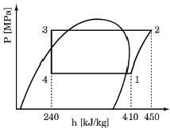
- 냉매 순환량은 0.7kg/s이다.
- 냉동장치의 실제 성능계수는 4.25이다.
- 실제 압축기 토출 가스의 엔탈피는 약 467kJ/kg이다.
- 실제 압축기 축 동력은 약 47.1kW이다.
(정답률: 56%)
23. 냉동장치의 고압부에 대한 안전장치가 아닌 것은?
- 안전밸브
- 고압스위치
- 가용전
- 방폭문
(정답률: 71%)
24. 냉동기에 사용되는 팽창밸브에 관한 설명으로 옳은 것은?
- 온도 자동 팽창밸브는 응축기의 온도를 일정하게 유지ㆍ제어한다.
- 흡입압력 조정밸브는 압축기의 흡입압력이 설정치 이상이 되지 않도록 제어한다.
- 전자밸브를 설치할 경우 흐름방향을 고려할 필요가 없다.
- 고압측 플로트(float)밸브는 냉매 액의 속도로 제어한다.
(정답률: 54%)
25. 고온부의 절대온도를 T1, 저온부의 절대온도를 T2, 고온부로 방출하는 열량을 Q1, 저온부로부터 흡수하는 열량을 Q2라고 할 때, 이 냉동기의 이론 성적계수(COP)를 구하는 식은?
- Q1/Q1-Q2
- Q2/Q1-Q2
- T1/T1-T2
- T1-T2/T1
(정답률: 74%)
26. 2단압축 1단팽창 냉동장치에서 각 점의 엔탈피는 다음의 P-h 선도와 같다고 할 때, 중간냉각이 냉매 순환량은? (단, 냉동능력은 20RT이다.)
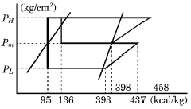
- 68.04kg/h
- 85.89kg/h
- 222.82kg/h
- 290.8kg/h
(정답률: 32%)
27. 증기 압축식 냉동기와 비교하여 흡수식 냉동기의 특징이 아닌 것은?
- 일반적인 증기 압축식 냉동기보다 성능계수가 낮다.
- 압축기의 소비동력을 비교적 절감시킬 수 있다.
- 초기 운전 시 정격성능을 발휘할 때까지 도달속도가 느리다.
- 냉각수 배관, 펌프, 냉각탑의 용량이 커져 보조기기설비비가 증가한다.
(정답률: 40%)
28. 단위 시간당 전도에 의한 열량에 대한 설명으로 틀린 것은?
- 전도열량은 물체의 두께에 반비례한다.
- 전도열량은 물체의 온도 차에 비례한다.
- 전도열량은 전열면적에 반비례한다.
- 전도열량은 열전도율에 비례한다.
(정답률: 70%)
29. 냉동능력이 99600kcal/h이고, 압축소요 동력이 35kW인 냉동기에서 응축기의 냉각수 입구온도가 20℃, 냉각수량이 360L/min이면 응축기 출구의 냉각수 온도는?
- 22℃
- 24℃
- 26℃
- 28℃
(정답률: 50%)
30. 냉동사이클에서 습압축으로 일어나는 현상과 가장 거리가 먼 것은?
- 응축잠열 감소
- 냉동능력 감소
- 압축기의 체적 효율 감소
- 성적계수 감소
(정답률: 66%)
31. 일반적인 냉매의 구비 조건으로 옳은 것은?
- 활성이며 부식성이 없을 것
- 전기저항이 적을 것
- 점성이 크고 유동 저항이 클 것
- 열전달률이 양호할 것
(정답률: 55%)
32. 증기 압축식 냉동사이클에서 증발온도를 일정하게 유지시키고, 응축온도를 상승시킬 때 나타나는 현상이 아닌 것은?
- 소요동력 증가
- 성적계수 감소
- 토출가스 온도 상승
- 플래시가스 발생량 감소
(정답률: 77%)
33. 다음 중 터보압축기의 용량(능력)제어 방법이 아닌것은?
- 회전속도에 의한 제어
- 흡입 댐퍼(damper)에 의한 제어
- 부스터(booster)에 의한 제어
- 흡입가이드 베인(guide vane)에 의한 제어
(정답률: 61%)
34. 나선상의 관에 냉매를 통과시키고, 그 나선관을 원형 또는 구형의 수조에 담그고, 물을 수조에 순환시켜서 냉각하는 방식의 응축기는?
- 대기식 응축기
- 이중관식 응축기
- 지수식 응축기
- 증발식 응축기
(정답률: 70%)
35. 0.08m3의 물속에 700℃의 쇠뭉치 3kg을 넣었더니 쇠뭉치의 평균 온도가 18℃로 변하였다. 이때 물의 온도 상승량은? (단, 물의 밀도는 1000kg/m3이고, 쇠의 비열은 606J/kgㆍ℃이며, 물과 공기와의 열교환은 없다.)
- 2.8℃
- 3.7℃
- 4.8℃
- 5.7℃
(정답률: 48%)
36. 팽창밸브의 역할로 가장 거리가 먼 것은?
- 압력강하
- 온도강하
- 냉매량 제어
- 증발기에 오일 흡입 방지
(정답률: 68%)
37. 증발식 응축기에 관한 설명으로 옳은 것은?
- 외기의 습구온도 영향을 많이 받는다.
- 외부공기가 깨끗한 곳에서는 일리미네이터(eliminator)를 설치할 필요가 없다.
- 공급수의 양은 물의 증발량과 일리미네이터에서 배제하는 양을 가산한 양으로 충분하다.
- 냉각작용은 물을 살포하는 것만으로 한다.
(정답률: 65%)
38. 냉동장치로 얼음 1ton을 만드는 데 50kWh의 동력이 소비된다. 이 장치에 20℃의 물이 들어가서 -10℃의 얼음으로 나온다고 할 때, 이 냉동장치의 성적계수는? (단, 얼음의 융해 잠열은 80kcal/kg, 비열은 0.5kcal/kgㆍ℃이다.)
- 1.12
- 2.44
- 3.42
- 4.67
(정답률: 55%)
39. 냉동능력이 1RT인 냉동장치가 1kW의 압축동력을 필요로 할 때, 응축기에서의 방열량은?
- 2kcal/h
- 3321kcal/h
- 4180kcal/h
- 2460kcal/h
(정답률: 56%)
40. 안정적으로 작동되는 냉동 시스템에서 팽창밸브를 과도하게 닫았을 때 일어나는 현상이 아닌 것은?
- 흡입압력이 낮아지고 증발기 온도가 저하한다.
- 압축기의 흡입가스가 과열된다.
- 냉동능력이 감소한다.
- 압축기의 토출가스 온도가 낮아진다.
(정답률: 56%)
3과목: 공기조화
41. 다음 그림에 대한 설명으로 틀린 것은? (단, 하절기 공기조화 과정이다.)
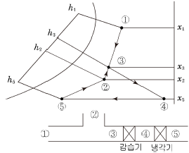
- ③을 감습기에 통과시키면 엔탈피 변화 없이 감습된다.
- ④는 냉각기를 통해 엔탈피가 감소되며 ⑤로 변화된다.
- 냉각기 출구 공기 ⑤를 취출하면 실내에서 취득열량을 얻어 ②에 이른다.
- 실내공기 ①과 외기 ②를 혼합하면 ③이 된다.
(정답률: 58%)
42. 다음은 어느 방식에 대한 설명인가?
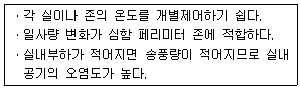
- 정풍량 단일덕트방식
- 변풍량 단일덕트방식
- 패키지방식
- 유인유닛방식
(정답률: 63%)
43. 원형덕트에서 사각덕트로 환산시키는 식으로 옳은 것은? (단, a는 사각덕트의 장변길이, b는 단변길이, d는 원형덕트의 직경 또는 상당직경이다.)
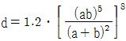
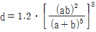
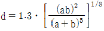
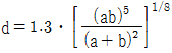
(정답률: 56%)
44. 다음 중 흡수식 냉동기의 구성기기가 아닌 것은?
- 응축기
- 흡수기
- 발생기
- 압축기
(정답률: 71%)
45. 냉난방 공기조화 설비에 관한 설명으로 틀린 것은?
- 조명기구에 의한 영향은 현열로서 냉방부하 계산 시 고려되어야 한다.
- 패키지 유닛 방식을 이용하면 중앙공조 방식에 비해 공기조화용 기계실의 면적이 적게 요구된다.
- 이중 덕트 방식은 개별제어를 할 수 있는 이점을 있지만 일반적으로 설비비 및 운전비가 많아진다.
- 지역냉난방은 개별냉난방에 비해 일반적으로 공사비는 현저하게 감소한다.
(정답률: 66%)
46. 단일덕트 재열방식의 특징에 관한 설명으로 옳은 것은?
- 부하 패턴이 다른 다수의 실 또는 존의 공조에 적합하다.
- 식당과 같이 잠열부하가 많은 곳의 공조에는 부적합하다.
- 전수방식으로서 부하변동이 큰 실이나 존에서 에너지 절약형으로 사용된다.
- 시스템의 유지ㆍ보수 면에서는 일반 단일덕트에 비해 우수하다.
(정답률: 38%)
47. 유효온도(effective temperature)에 대한 설명으로 옳은 것은?
- 온도, 습도를 하나로 조합한 상태의 측정온도이다.
- 각기 다른 실내온도에서 습도에 따라 실내 환경을 평가하는 척도로 사용된다.
- 인체가 느끼는 쾌적온도로써 바람이 없는 정지된 상태에서 상대습도가 100%인 포화상태의 공기 온도를 나타낸다.
- 유효온도 선도는 복사영향을 무시하여 건구온도 대신에 글로브 온도계의 온도를 사용한다.
(정답률: 55%)
48. 습공기 100kg이 있다. 이때 혼합되어 있는 수증기의 질량이 2kg이라면, 공기의 절대습도는?
- 0.0002kg/kg
- 0.02kg/kg
- 0.2kg/kg
- 0.98kg/kg
(정답률: 71%)
49. 크기 1000×500mm의 직관 덕트에 35℃의 온풍 18000m3/h이 흐르고 있다. 이 덕트가 -10℃의 실외 부분을 지날 때 길이 20m당 덕트 표면으로부터의 열손실은? (단, 덕트는 암면 25mm로 보온되어 있고, 이때 1000m당 온도 차 1℃에 대한 온도강하는 0.9℃이다. 공기의 밀도는 1.2kg/m3, 정압비열은 1.01kJ/kgㆍK이다.)
- 3.0kW
- 3.8kW
- 4.9kW
- 6.0kW
(정답률: 41%)
50. 습공기의 수증기 분압이 Pv, 동일온도의 포화수증기압이 Ps일 때, 다음 설명 중 틀린 것은?
- Pv＜Ps일 때 불포화습도기
- Pv = Ps일 때 포화습도기
 은 상대습도
은 상대습도- Pv = 0일 때 건공기
(정답률: 70%)
51. 덕트의 굴곡부 등에서 덕트 내에 흐르는 기류를 안정시키기 위한 목적으로 사용하는 기구는?
- 스플릿 댐퍼
- 가이드 베인
- 릴리프 댐퍼
- 버터플라이 댐퍼
(정답률: 71%)
52. 실리카겔, 활성알루미나 등을 사용하여 감습을 하는 방식은?
- 냉각 감습
- 압축 감습
- 흡수식 감습
- 흡착식 감습
(정답률: 70%)
53. 난방설비에서 온수헤더 또는 증기헤더를 사용하는 주된 이유로 가장 적합한 것은?
- 미관을 좋게 하기 위해서
- 온수 및 증기의 온도 차가 커지는 것을 방지하기 위해서
- 워터 해머(water hammer)를 방지하기 위해서
- 온수 및 증기를 각 계통별로 공급하기 위해서
(정답률: 61%)
54. 환기(ventilation)란 A에 있는 공기의 오염을 막기 위하여 B로부터 C를 공급하여, 실내의 D를 실외로 배출 하고 실내의 오염 공기를 교환 또는 희석시키는 것을 말한다. 여기서 A, B, C, D로 적절한 것은?
- A : 일정 공간, B : 실외, C : 청정한 공기, D : 오염된 공기
- A : 실외, B : 일정 공간, C : 청정한 공기, D : 오염된 공기
- A : 일정 공간, B : 실외, C : 오염된 공기, D : 청정한 공기
- A : 실외, B : 일정 공간, C : 오염된 공기, D : 청정한 공기
(정답률: 75%)
55. 다음과 같이 단열된 덕트 내에 공기가 통하고 이것에 열량 Q (kcal/h)와 수분 L (kg/h)을 가하여 열평형이 이루어졌을 때, 공기에 가해진 열량은? (단, 공기의 유량은 G (kg/h), 가열코일 입ㆍ출구의 엔탈피, 절대습도를 각각 h1 , h2 (kcal/kg), x1, x2 (kg/kg)로 하고, 수분의 엔탈피를 hL (kcal/kg)로 한다.)
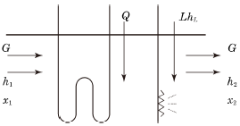
- G(h2-h1)+LhL
- G(x2-x1)+LhL
- G(h2-h1)-LhL
- G(x2-x1)-LhL
(정답률: 53%)
56. 공기열원 열펌프를 냉동사이클 또는 난방사이클로 전환하기 위하여 사용하는 밸브는?
- 체크 밸브
- 글로브 밸브
- 4방 밸브
- 릴리프 밸브
(정답률: 67%)
57. 국부저항 상류의 풍속을 V1, 하류의 풍속을 V2 라고 하고 전압기준 국부저항계수를 ζT, 정압기준 국부저항계수를 ζS 라 할 때 두 저항계수의 관계식은?
- ζT = ζS + 1 - (V1/V2)2
- ζT = ζS + 1 - (V2/V1)2
- ζT = ζS + 1 + (V1/V2)2
- ζT = ζS + 1 + (V2/V1)2
(정답률: 60%)
58. 냉동 창고의 벽체가 두께 15cm, 열전도율 1.4kcal/mㆍhㆍ℃인 콘크리트와 두께 5cm, 열전도율이 1.2kcal/mㆍhㆍ℃인 모르타르로 구성되어 있다면, 벽체의 열통과율은? (단, 내벽측 표면 열전달률은 8kcal/m2ㆍhㆍ℃, 외벽측 표면 열전달률은 20kcal/m2ㆍhㆍ℃이다.)
- 0.026kcal/m2ㆍhㆍ℃
- 0.323kcal/m2ㆍhㆍ℃
- 3.088kcal/m2ㆍhㆍ℃
- 38.175kcal/m2ㆍhㆍ℃
(정답률: 61%)
59. 공조설비를 구성하는 공기조화기는 공기여과기, 냉ㆍ온수코일, 가습기, 송풍기로 구성되어 있는데, 다음 중 이들 장치와 직접 연결되어 사용되는 설비가 아닌 것은?
- 공급덕트
- 주증기관
- 냉각수관
- 냉수관
(정답률: 67%)
60. 10℃의 냉풍을 급기하는 덕트가 건구온도 30℃, 상대습도 70%인 실내에 설치되어 있다. 이때 덕트의 표면에 결로가 발생하지 않도록 하려면 보온재의 두께는 최소 몇 mm 이상이어야 하는가? (단, 30℃, 70%의 노점 온도 24℃, 보온재의 열전도율은 0.03kcal/mㆍhㆍ℃, 내표면의 열전달률은 40kcal/m2ㆍhㆍ℃, 외표면의 열전달률은 8kcal/m2ㆍhㆍ℃, 보온재 이외의 열저항은 무시한다.)
- 5mm
- 8mm
- 16mm
- 20mm
(정답률: 36%)
4과목: 전기제어공학
61. 그림과 같은 블럭선도에서 X3/X1 를 구하면?
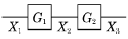
- G1 + G2
- G1 - G2
- G1ㆍG2
- G1/G2
(정답률: 66%)
62. 내부저항 90Ω, 최대지시값 100μA의 직류전류계로 최대지시값 1mA를 측정하기 위한 분류기 저항은 몇 Ω인가?
- 9
- 10
- 90
- 100
(정답률: 42%)
63. 100V용 전구 30W와 60W 두 개를 직렬로 연결하고 직류 100V 전원에 접속하였을 때 두 전구의 상태로 옳은 것은?
- 30W 전구가 더 밝다.
- 60W 전구가 더 밝다.
- 두 전구의 밝기가 모두 같다.
- 두 전구가 모두 켜지지 않는다.
(정답률: 65%)
64. 조절계의 조절요소에서 비례미분제어에 관한 기호는?
- P
- PI
- PD
- PID
(정답률: 61%)
65. A = 6+j8, B = 20∠60°일 때 A+B를 직각좌표형식으로 표현하면?
- 16+j18
- 26+j28
- 16+j25.32
- 23.32+j18
(정답률: 58%)
66. 보일러의 자동연소제어가 속하는 제어는?
- 비율제어
- 추치제어
- 추종제어
- 정치제어
(정답률: 44%)
67. 서보기구에서 주로 사용하는 제어량은?
- 전류
- 전압
- 방향
- 속도
(정답률: 65%)
68. 비례적분미분제어를 이용했을 때의 특징에 해당되지 않는 것은?
- 정정시간을 적게 한다.
- 응답의 안정성이 작다.
- 잔류편차를 최소화 시킨다.
- 응답의 오버슈트를 감소시킨다.
(정답률: 68%)
69. 유도전동기에 인가되는 전압과 주파수를 동시에 변환시켜 직류전동기와 동등한 제어 성능을 얻을 수 있는 제어방식은?
- VVVF 방식
- 교류 궤환제어방식
- 교류 1단 속도제어방식
- 교류 2단 속도제어방식
(정답률: 65%)
70. 단면적 S(m2)]를 통과하는 자속을 ø(Wb)라 하면 자속밀도 B(Wb/m2)를 나타낸 식으로 옳은 것은?
- B = Sø
- B = ø/S
- B = S/ø
- B = ø/μS
(정답률: 60%)
71. 어떤 저항에 전압 100V, 전류 50A를 5분간 흘렸을 때 발생하는 열량은 약 몇 kcal인가?
- 90
- 180
- 360
- 720
(정답률: 53%)
72. 3상 유도전동기의 출력이 5kW, 전압 200V, 역률 80%, 효율이 90%일 때 유입되는 선전류는 약 몇 A인가?
- 14
- 17
- 20
- 25
(정답률: 53%)
73. 탄성식 압력계에 해당되는 것은?
- 경사관식
- 압전기식
- 환상평형식
- 벨로스식
(정답률: 63%)
74. 정현파 전압
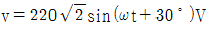
보다 위상이 90° 뒤지고 최댓값이 20A인 정현파 전류의 순싯값은 몇 A인가?- 20sin(ωt-30°)
- 20sin(ωt-60°)
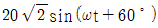
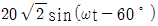
(정답률: 57%)
75. 빛의 양(조도)에 의해서 동작되는 CdS를 이용한 센서에 해당하는 것은?
- 저항 변화형
- 용량 변화형
- 전압 변화형
- 인덕턴스 변화형
(정답률: 48%)
76. 전원전압을 안정하게 유지하기 위하여 사용되는 다이오드로 가장 옳은 것은?
- 제너 다이오드
- 터널 다이오드
- 보드형 다이오드
- 바랙터 다이오드
(정답률: 66%)
77. 그림과 같은 펄스를 라플라스 변환하면 그 값은?
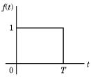
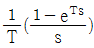
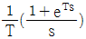
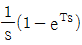
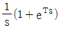
(정답률: 61%)
78. 피드백 제어계의 제어장치에 속하지 않는 것은?
- 설정부
- 조절부
- 검출부
- 제어대상
(정답률: 45%)
79. 평행한 두 도체에 같은 방향의 전류를 흘렸을 때 두 도체 사이에 작용하는 힘은?
- 흡인력
- 반발력
- I/2πr 의 힘
- 힘이 작용하지 않는다.
(정답률: 62%)
80. 논리식
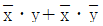
를 간단히 표시한 것은?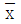
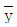
- 0
- x + y
(정답률: 65%)
5과목: 배관일반
81. 급수배관 시공 시 수격작용의 방지 대책으로 틀린것은?
- 플래시 밸브 또는 급속 개폐식 수전을 사용한다.
- 관 지름은 유속이 2.0~2.5m/s 이내가 되도록 설정한다.
- 역류 방지를 위하여 체크 밸브를 설치하는 것이 좋다.
- 급수관에서 분기할 때에는 T 이음을 사용한다.
(정답률: 39%)
82. 고무링과 가단 주철제의 칼라를 죄어서 이음하는 방법은?
- 플랜지 접합
- 빅토리 접합
- 기계적 접합
- 동관 접합
(정답률: 59%)
83. 공랭식 응축기 배관 시 틀린 것은?
- 소형 냉동기에 사용하며 핀이 있는 파이프 속에 냉매를 통하여 바람 이송 냉각설계로 되어 있다.
- 냉방기가 응축기 아래 설치되는 경우 배관 높이가 10m 이상일 때는 5m마다 오일 트랩을 설치해야 한다.
- 냉방기가 응축기 위에 위치하고, 압축기가 냉방기에 내장되었을 경우에는 오일 트랩이 필요없다.
- 수랭식에 비해 능력은 낮지만, 냉각수를 사용하지 않아 동결의 염려가 없다.
(정답률: 59%)
84. 증기난방 배관 시 단관 중력 환수식 배관에서 증기와 응축수의 흐름 방향이 다른 역류관의 구배는 얼마로 하는가?
- 1/50 ~ 1/100
- 1/100 ~ 1/200
- 1/200 ~ 1/250
- 1/250 ~ 1/300
(정답률: 36%)
85. 공동주택 등 회의 건축물 등에 도시가스를 공급하는 경우 정압기에서 가스 사용자가 점유하고 있는 토지의 경계까지 이르는 배관을 무엇이라고 하는가?
- 내관
- 공급관
- 본관
- 중압관
(정답률: 52%)
86. 냉동장치에서 압축기의 진동이 배관에 전달되는 것을 흡수하기 위하여 압축기 토출, 흡입배관 등에 설치해주는 것은?
- 팽창밸브
- 안전밸브
- 사이트 글라스
- 플렉시블 튜브
(정답률: 74%)
87. 온수난방 배관 설치 시 주의 사항으로 틀린 것은?
- 온수 방열기마다 수동식 에어벤트를 설치한다.
- 수평 배관에서 관경을 바꿀 때는 편심 이음을 사용한다.
- 팽창관에 스톱밸브를 부착하여 긴급상황 시유체 흐름을 차단하도록 한다.
- 수리나 난방 휴지 시 배수를 위한 드레인 밸브를 설치한다.
(정답률: 59%)
88. 급수에 사용되는 물은 탄산칼슘의 함유량에 따라 연수와 경수로 구분된다. 경수 사용 시 발생될 수 있는 현상으로 틀린 것은?
- 보일러 용수로 사용 시 내면에 관석이 많이 발생한다.
- 전열효율이 저하하고 과열 원인이 된다.
- 보일러의 수명이 단축된다.
- 비누거품이 많이 발생한다.
(정답률: 65%)
89. 관의 종류와 이음방법의 연결로 틀린 것은?
- 강관 - 나사이음
- 동관 - 압축이음
- 주철관 - 칼라이음
- 스테인리스강관 –몰코이음
(정답률: 52%)
90. 냉동설비배관에서 액분리기와 압축기 사이에 냉매배관을 할 때 구배로 옳은 것은?
- 1/100 정도의 압축기 측 상향 구배로 한다.
- 1/100 정도의 압축기 측 하향 구배로 한다.
- 1/200 정도의 압축기 측 상향 구배로 한다.
- 1/200 정도의 압축기 측 하향 구배로 한다.
(정답률: 54%)
91. 밀폐식 온수난방 배관에 대한 설명으로 틀린 것은?
- 배관의 부식이 비교적 적어 수명이 길다.
- 배관경이 적어지고 방열기도 적게 할 수 있다.
- 팽창탱크를 사용한다.
- 배관 내의 온수 온도는 70℃ 이하이다.
(정답률: 63%)
92. 강관의 나사이음 시 관을 절단한 후 관 단면의 안쪽에 생기는 거스러미를 제거할 대 사용하는 공구는?
- 파이프 바이스
- 파이프 리머
- 파이프 렌치
- 파이프 커터
(정답률: 72%)
93. 순동 이음쇠를 사용할 때에 비하여 동합금 주물 이음쇠를 사용할 때 고려할 사항으로 가장 거리가 먼 것은?
- 순동 이음쇠 사용에 비해 모세관 현상에 의한 용융 확산이 어렵다.
- 순동 이음쇠와 비교하여 용접재 부착력은 큰 차이가 없다.
- 순동 이음쇠와 비교하여 냉벽 부분이 발생할 수 있다.
- 순동 이음쇠 사용에 비해 열팽창의 불균일에 의한 부정적 틈새가 발생할 수 있다.
(정답률: 60%)
94. 급수 펌프에 대한 배관 시공법 중 옳은 것은?
- 수평관에서 관경을 바꿀 경우 동심 리듀를 사용한다.
- 흡입관을 되도록 길게 하고 굴곡 부분이 되도록 많게 하여야 한다.
- 풋 밸브는 동 수위면보다 흡입관경의 2배 이상 물 속에 들어가야 한다.
- 토출 측은 진공계를, 흡입 측은 압력계를 설치한다.
(정답률: 55%)
95. 배관용 패킹재료 선정 시 고려해야 할 사항으로 가장 거리가 먼 것은?
- 유체의 압력
- 재료의 부식성
- 진동의 유무
- 시트면의 형상
(정답률: 64%)
96. 난방배관에 대한 설명을 옳은 것은?
- 환수주관의 위치가 보일러 표준수위보다 위쪽에 배관 되어 있으면 습식환수라고 한다.
- 진공환수식 증기난방에서 하트포드접속법을 활용하면 응축수를 1.5m까지 흡상할 수 있다.
- 온수난방의 경우 증기난방보다 운전 중 침입공기에 의한 배관의 부식 우려가 크다.
- 증기배관 도중에 글로브 밸브를 설치하는 경우에는 밸브축이 옆을 향하도록 설치하여야 한다.
(정답률: 39%)
97. 배관의 이음에 관한 설명으로 틀린 것은?
- 동관의 압축 이음(flare joint)은 지름이 작은 관에서 분해ㆍ결합이 필요한 경우에 주로 적용하는 이음방식이다.
- 주철관의 타이튼 이음은 고무링을 압륜으로 죄어 볼트로 체결하는 이음방식이다.
- 스테인리스 강관의 프레스 이음은 고무링이 들어 있는 이음쇠에 관을 넣고 압축공구로 눌러 이음하는 방식이다.
- 경질염화비닐관의 TS이음은 접착제를 발라 이음관에 삽입하여 이음하는 방식이다.
(정답률: 41%)
98. 급탕배관의 신축을 흡수하기 위한 시공방법으로 틀린 것은?
- 건물의 벽 관통부분 배관에는 슬리브를 끼운다.
- 배관의 굽힘 부분에는 벨로스 이음으로 접합한다.
- 복식 신축관 이음쇠는 신축구간의 중간에 설치한다.
- 동관을 지지할 때에는 석면, 고무 등의 보호제를 사용하여 고정시킨다.
(정답률: 60%)
99. 배수의 성질에 의한 구분에서 수세식 변기의 대ㆍ소변에서 나오는 배수는?
- 오수
- 잡배수
- 특수배수
- 우수배수
(정답률: 73%)
100. 개방식 팽창탱크 장치 내 전수량이 20000L이며 수온을 20℃에서 80℃로 상승시킬 경우, 물의 팽창수량은? (단, 비중량은 20℃일 때 0.99823kg/L, 80℃일 때 0.97183kg/L이다.)
- 54.3L
- 400L
- 544L
- 5430L
(정답률: 52%)